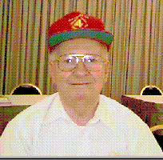

This web site is dedicated to former C Company members who served with the company during World War II. Their family members are also considered to be part of the "C Company" family. We also welcome visits by the general public. Widows, sons and daughters of former members will be placed on our mailing list, if requested. We publish a semi annual newsletter (fall and spring) which provides news about our members. In addition, we send out an address list each year so we have current addresses for communication among ourselves. We encourage communications among members on a frequent basis since time is short and tomorrow may be too late. The webmaster is Rowland Lewis, comments and suggestions are solicited. To contact me via Email CLICK HERE. Our policy is to respond to email within 24 hours although circumstances may interfere at times. We have no official relationship with the US Marine Corps. Information on this site is either info that is in the public domain or is based on the memories of our members. We expect that our site will be perpetually under construction.
There are two types of links on this site. Links to other pages on the site. Clicking on these links will display another page on the site. The other type of link is to another web site. When you click on one of these links you go to that site. The other sites listed here are USMC sites and other sites that may provide information to our members. The best results will be obtained with DSL or a cable modem, 56K modems will probably give acceptable results. If you find broken links on this site please advise me via Email so I can check and either fix or remove the link.
This
page maintained by Rowland Lewis
Last Modified 03/19/2007